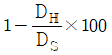
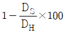
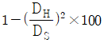
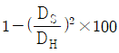

인쇄산업기사 (2010-05-09 기출문제)
1과목: 인쇄공학
1. 계면 또는 표면장력에 관한 설명으로 옳지 않은 것은?
- 기체와 액체표면의 장력을 표면장력이라 한다.
- 서로 용해하는 액체끼리는 계면장력이 0 이다.
- 물은 벤젠 등의 유기액체보다 큰 표면장력을 가지고 있다.
- 소금과 같은 염류를 물에 녹이면 용액의 농도는 표면보다 내부가 낮아지기 때문에 계면장력이 낮아진다.
(정답률: 알수없음)

2. 인쇄 중에 잉크집 안의 잉크가 유동성 불량으로 잉크롤어에 잘 전달되지 않고 인쇄 농도가 차차 흐려지는 현상을 무엇이라 하는가?
- 잉크 되오름(backing away)
- 요변성(thixotropy)
- 잉크 쌓임(ink piling)
- 응집(flocculation)
(정답률: 알수없음)
3. 종이에 인쇄 후 뒤비침 현상이 발생하였을 때 가장 직접적인 관련이 있는 것은?
- 광택
- 평활성
- 불투명도
- 사이즈도
(정답률: 알수없음)
4. 함유 수분율이 65%fh 동일한 종이라도 습도를 흡수하여 65%가 된 종이와 건조되어 65%가 된 종이는 신축률이 다른데 이러한 현상을 무엇이라 하는가?
- 모이스쳐 현상
- 댐프닝 현상
- 히스테리시스 현상
- 휴미디티 현상
(정답률: 알수없음)
5. 시즈닝(seasoning)에 대하여 가장 옳게 설명한 것은?
- 잉크의 번짐을 막기 위해 종이에 로진을 첨가하는 작업이다.
- 종이의 표리면의 차이를 의미한다.
- 용지를 인쇄에 적합하도록 온∙습도를 조정하는 것이다.
- 인쇄시에 잉크가 잘 흡수되도록 종이의 결을 한 방향으로 조정하는 것이다.
(정답률: 알수없음)
6. 오프셋 인쇄물에서 콘트라스트(Contrast, %)를 구하는 식으로 옳은 것은? (단, DS 는 민인쇄부의 인쇄농도, DH 는 망점부의 인쇄농도를 나타낸다.)




(정답률: 알수없음)
7. 잉크에 전단응력(shear stress)이 30dyne/cm2 이 주어졌을 때 전단속도(shear rate)가 15sec-1 이었다. 이 잉크의 점도(viscosity)는 몇 poise 인가?
- 0.5
- 1
- 1.5
- 2
(정답률: 알수없음)
8. 다음 중 건식 트래핑 불량이 가장 쉽게 일어날 수 있는 조건에 해당되는 것은?
- 단색인쇄기로 단색 인쇄를 하는 경우
- 다색인쇄기로 단색 인쇄를 하는 경우
- 단색인쇄기로 다색 인쇄를 하는 경우
- 다색인쇄기(4color)로 다색 인쇄(4color)를 하는 경우
(정답률: 알수없음)
9. 잉크의 점도가 1.6 poise 일 때 유동도(fluidity)는 약 얼마인가?
- 0.63
- 2.56
- 3.20
- 6.40
(정답률: 알수없음)
10. 인쇄실의 환경이 작업효율에 영향을 주는 요소와 가장 거리가 먼 것은?
- 인쇄실 내의 환경정리
- 인쇄실의 위치
- 인쇄실의 온도 및 습도
- 작업장의 노동조건
(정답률: 알수없음)
11. 인쇄 용지의 정전기 발생에 대한 설명으로 옳은 것은?
- 겨울철보다는 여름철에 정정기가 많이 발생한다.
- 롤러와 종이의 마찰에 의해 발생한다.
- 정전기는 상대습도가 약 40% 이상일 때 가장 많이 발생한다.
- 겨울철에 난방을 하면 정전기 발생은 감소한다.
(정답률: 알수없음)
12. 일반적으로 인쇄잉크의 온도를 상승시켰을 때 발생하는 현상이 아닌 것은?
- 점도가 낮아진다.
- 택(tack)이 낮아진다.
- 망점확대(dot gain)가 발생한다.
- 침투가 늦어진다.
(정답률: 알수없음)
13. 다음 중 인쇄물의 표면가공 방법이 아닌 것은?
- 광책 니스칠
- 비닐필름 입히기
- 셀룰로이드 입히기
- 쪽맞추기
(정답률: 알수없음)
14. 습수와 공기의 표면 장력이 10 dyne/㎝ 이고, 인쇄판과 습수의 계면 장력이 20 dyne/㎝ 이다. 인쇄판과 공기의 표면 장력은 얼마인가? (단, 인쇄판과 습수가 이루는 접촉각은 60° 이다.)
- 15 dyne/㎝
- 25 dyne/㎝
- 35 dyne/㎝
- 45 dyne/㎝
(정답률: 알수없음)
15. 다음 중 잉크의 피복저항에 대하여 잘못 설명한 것은?
- 인쇄압이 증가하면 피복저항은 감소한다.
- 인쇄속도가 증가하면 피복저항은 감소한다.
- 피복저항이 증가하면 필요한 최저잉크량이 증가한다.
- 평활도와 피복저항은 직접적인 관계가 있다.
(정답률: 알수없음)
16. 가열에 의해 용융되는 왁스 등을 접착제를 사용하여 기재에 코팅한 후, 굳어지기 전에 다른 기재를 접합하여 쿨링롤에서 왁스를 고화 접합하는 방법은?
- 익스트루전 코팅(Extrusion coating)
- 웨트 라미네이션(Wet lamination)
- 드라이 라미네이션(Dry lamination)
- 핫 멜트 라미네이션(Hot melt lamination)
(정답률: 알수없음)
17. 사고예방원리 5단계 중 제4단계인 시정책의 선정과 관계가 없는 것은?
- 작업분석
- 기술적 개선
- 규정 및 수칙의 개선
- 안전행정의 개선
(정답률: 알수없음)
18. 미스팅(Misting)의 발생에 대한 설명으로 잘못된 것은?
- 롤러 상의 잉크 피막이 두꺼울수록 미스팅량이 증가한다.
- 인쇄속도가 증가하면 미스팅은 증가한다.
- 롤러 표면의 요철리 심해 부분적으로 잉크 피막이 두꺼워지면 미스팅이 증가한다.
- 대기의 온도가 저하되어 건조하면 미스팅은 감소한다.
(정답률: 알수없음)
19. 잉크의 전이 과정 중 잉크가 액체처럼 작용하다 강한 스트레스를 받으면 순간 고체처럼 작용하여 분리 전이 된다는 학설은?
- 공동설
- 중간설
- 점탄성설
- 분열설
(정답률: 알수없음)
20. 방습, 방수, 내유지성을 주기 위하여 종이컵이나 쥬스컵, 식료품의 포장에 많이 사용되는 표면 가공법은?
- 광택니스칠
- 비닐코팅
- 셀룰로이드코팅
- 왁스칠
(정답률: 알수없음)
2과목: 인쇄재료학
21. 다음 중 사진 현상제의 촉진제로 사용하는 것은?
- 티오황산나트륨(Na2S2O3)
- 아황상수소나트륨(NaHSO3)
- 수산화나트륨(NaOH)
- 브롬화칼륨(KBr)
(정답률: 알수없음)
22. 종이의 휨강도를 측정하는 시험법으로 가장 거리가 먼 것은?
- 굴리(Gurley)법
- 타버(Taber)법
- 클라크(Clark)법
- 데니슨(Dennison) 왁스법
(정답률: 알수없음)
23. 다음 잉크 중 가장 점도가 높은 잉크는?
- 신문용 잉크
- 오프셋매엽용 잉크
- 그라비어용 잉크
- 플렉소용 잉크
(정답률: 알수없음)
24. 컬러 네거티브 필름을 구성하는 유제층 중에서 Blue광이 다음의 유제층에 영향을 주지 못하게 흡수하도록 해둔 층은?
- Blue 감광 유제층
- Green 감광 유제층
- Yellow 필터증
- 헐레이션 방지츨
(정답률: 알수없음)
25. 도공지(코팅지) 제조에 사용되는 도공용 안료 입자으 크기가 작아질수록 나타날 수 있는 사항으로 틀린 것은?
- 제조된 도공지(코팅지)의 광택을 증가시킨다.
- 도공지(코팅지)의 표면이 평활하게 된다.
- 비표면적의 증가로 바인더의 요구량이 감소한다.
- 인쇄적성이 다소 향상될 수 있다.
(정답률: 알수없음)
26. 다음 중 자외선 경화잉크의 장점이 아닌 것은?
- 생산성이 향상되고 잉크의 건조공간이 줄어든다.
- 잉크의 건조피막이 강하다.
- 유기용제형 잉크이므로 내용제성이 강하다.
- 열 없이 건조되므로 IR 건조로가 불필요하다.
(정답률: 알수없음)
27. 산화중합 건조형 잉크에 대한 설명으로 틀린 것은?
- 온도가 높을수록 건조가 빠르다.
- 습도가 높을수록 건조가 느리다.
- 축임물으 유화가 건조를 지연시킨다.
- 종이 면이 산성일수록 건조가 빠르다.
(정답률: 알수없음)
28. 한 변이 5cm 정도인 정사각형 종이를 2% 티오시안산 암모늄용액(20±1℃) 위헤 띄움과 동시에 1% 염화철 용액 한 방울을 시험편 위에 떨어뜨려 명확한 적색반점이 나타날 때까지의 시간을 측정하는 사이즈도 측정방법은?
- KBB
- 스테키히트
- 콥
- 커얼
(정답률: 알수없음)
29. 고무롤러의 긴 방향 직경의 왜곡의 최대값과 최소값의 차이를 나타내는 용어는?
- 원통도
- 진원도
- 경도
- 연삭
(정답률: 알수없음)
30. 다음 중 다층판(polymetal plate) 의 화선부 금속으로 주로 사용되는 것은?
- 구리(Cu)
- 철(Fe)
- 니켈(N)
- 크롬(Cr)
(정답률: 알수없음)
31. 일반적으로 비팅(beating) 시간이 증가할수록 강도가 약해지는 것은?
- 파열강도
- 내절강도
- 인장강도
- 인열강도
(정답률: 알수없음)
32. 자외선이나 전자선 등을 인쇄 잉크에 쬐어 그 에너지로 비이클 분자를 순간적으로 경화, 건조시키는 방식은?
- 침투 건조
- 광중합 건조
- 증발 건조
- 산화중합 건조
(정답률: 알수없음)
33. 제지 공정에서 종이를 순백∙불투명하게 하고 지면을 치밀∙평활하게 하는 공정은?
- 사이징
- 전충(충진)
- 착색
- 초지
(정답률: 알수없음)
34. 신용카드, 지하철 및 전화 카드류에 정보기록, 판독용 등으로 주로 사용되는 잉크는?
- 적외선 잉크
- 형광 잉크
- 자성 잉크
- 자외선 잉크
(정답률: 알수없음)
35. 블랭킷의 패킹 중 하드(hard) 패킹에 사용되는 재료는?
- 플라스틱 필름
- 언더 블랭킷
- 나사(천)
- 코르크 시트
(정답률: 알수없음)
36. 유지 1g 중에 함유된 유리지방산을 중화하는데 필요한 수산화칼륨(KOH)의 mg 수로 나타내는 유지류 시험법은?
- 요오드가
- 에스테르가
- 산가
- 중화가
(정답률: 알수없음)
37. 햇빛에 의해 검게 변하며, 어두운 곳에서 다시 흰색으로 되돌아오는 성질의 흰색 안료는?
- 산화티탄
- 아연화
- 리토폰
- 알루미나화이트
(정답률: 알수없음)
38. 종이 제조 공정에서 종이의 내수성 향상을 목적으로 첨가하는 기능성 첨가제를 무엇이라 하는가?
- 사이즈제
- 충진제
- 보류제
- 지력증강제
(정답률: 알수없음)
39. 평오목판에서 현상∙부식된 화선부의 금속면에 도포하는 것으로 그 위에 처리하는 지방성 현상잉크와 잘 접촉되며, 인쇄잉크가 묻었을 때 접착력을 좋게 하기 위한 처리는?
- 정면 처리
- 불감지화 처리
- 브루낙 처리
- 래커 처리
(정답률: 알수없음)
40. 다음 중 축임물의 구비 조건으로 틀린 것은?
- 판 표면에 잘 젖을 것
- 잉크에 과도하게 유화되지 않을 것
- 판 위에서 빨리 증발될 것
- 잉크의 전이를 방해하지 않을 것
(정답률: 알수없음)
3과목: 인쇄색채학
41. 색채를 표시하는 표색계로, 특정한 착색 물체인 색표에 번호나 기호를 붙이고, 측색하고자 하는 물체의 색채와 비교하여 물체의 색채를 표시하는 표색계는?
- 혼색계
- 현색계
- CIE표준 표색계
- CIEXYZ 표색계
(정답률: 알수없음)
42. 다음 중 물리적으로 분광 반사율의 고저를 말하는 것은?
- 색상
- 명도
- 채도
- 색입체
(정답률: 알수없음)
43. 분광반사율이나 투과율이 달라도 일정 조명광 아래에서 같은 색으로 보이게 되는 현상은?
- 색지각
- 컬러밸런스
- 분광감도
- 메타메리즘
(정답률: 알수없음)
44. 오스트발트 등색상 삼각형에서 C의 양이 21 이고, W의 양이 14 일 때 B의 양은 얼마인가?
- 35
- 55
- 65
- 78
(정답률: 알수없음)
45. 오스트발트 표색기호를 2Rne로 표시했을 경우 백색량을 표시하는 기호는?
- 2
- 2R
- n
- e
(정답률: 알수없음)
46. 이론적으로 Cyan과 Magenta 잉크를 혼합하면 어떤 빛이 제거되는가?
- Red와 Blue
- Green과 Blue
- Red와 Green
- Yellow와 Blue
(정답률: 알수없음)
47. Yellow 잉크의 농도 중 H(High) 가 0.70, M(Middle) 이 0.⑤4, L(Low) 이 0.02 일 때 색상오차는 얼마인가?
- 3%
- 5%
- 7%t
- 12%
(정답률: 알수없음)
48. 다음 중 가시광선에 대한 설명으로 옳은 것은?
- 라디오에서 사용되는 전파를 말한다.
- 380 ~ 780nm 범위의 전자파를 말한다.
- 120 ~ 150nm 범위의 전자파를 말한다.
- 750nm 이상의 전자파를 말한다.
(정답률: 알수없음)
49. 어떤 물체 위에서 빛이 투과하거나 흡수되지 않고 거의 완전반사에 가까운 색을 볼 수 있는 경우가 있는데, 이러한 색과 가장 관계있는 것은?
- 공간색
- 평면색
- 표면색
- 경영색
(정답률: 알수없음)
50. 눈에 들어오는 빛의 양이 아주 적거나 전혀 없을 때에 눈의 감광도는 대단히 높아지지만, 반대로 눈에 들어오는 빛의 양이 많으면 오히려 감광도는 떨어진다. 이러한 현상을 무엇이라고 하는가?
- 암소시
- 잔상
- 비시감도
- 순응
(정답률: 알수없음)
51. 다음 중 색료의 3원색에 해당되는 것은?
- Yellow, Magenta, Cyan
- Green, Red, Blue
- Yellow, Red, Green
- Green, Magenta, Blue
(정답률: 알수없음)
52. 조명의 밝기나 분광분포가 변화하여도 우리가 인지하는 색이나 밝기가 변화하지 않는 특성을 무엇이라 하는가?
- 색의 대비
- 보색잔상
- 항상성
- 유목성
(정답률: 알수없음)
53. 밝은 색은 더욱 밝게, 어두운 색은 더욱 어둡게 느껴지는 대비현상은?
- 채도대비
- 명도대비
- 보색대비
- 계시대비
(정답률: 알수없음)
54. 물체색은 표면색과 투과색으로 나눌 수 있다. 물체색에 대한 설명으로 옳은 것은?
- 물체가 대부분의 색을 흡수하면 그 물체는 흰색으로 보인다.
- 태양 광원이나 전등처럼 스스로 발광하는 광원색은 투과색에 속한다.
- 단파장인 청자색의 파장 범위를 강하게 반사하고 나머지를 흡수하면 물체는 청자색으로 보인다.
- 투과색의 경우, 색유리가 녹색일 때 녹색 파장은 반사하고, 다른 파장은 색유리가 투과한다.
(정답률: 알수없음)
55. 색의 3속성인 색상, 명도, 채도에 기반을 두고 여러 가지 색채를 질서 정연하게 배치한 3차원 적인 색채구조물을 무엇이라고 하는가?
- 색상환
- 표색계
- 색입체
- 색표
(정답률: 알수없음)
56. 다음 중 먼셀 표색계에서 빨강(R)의 순색에 해당되는 것은?
- 1R 2/2
- 3R 3/4
- 5R 4/14
- 10R 9/8
(정답률: 알수없음)
57. 영-헬름홀쯔의 3원색설 이론에 대한 설명으로 옳지 않은 것은?
- 영-헬름홀쯔의 3원색은 빨강, 초록, 파랑 이다.
- 영-헬름홀쯔의 이론은 감산혼합의 이론과 일치한다.
- 노랑은 빨강과 초록의 수용기가 동등하게 자극되었을 때 지각된다.
- 검정은 아무런 자극이 주어지지 않았을 때 지각된다.
(정답률: 알수없음)
58. Cyan 잉크의 빛에 대한 개략적인 흡수 범위로 옳은 것은?
- 400~500nm
- 500~600nm
- 600~700nm
- 700~800nm
(정답률: 알수없음)
59. 푸르킨예(Purkinje) 현상에 대한 설명으로 틀린 것은?
- 추상체는 낮에만 반응하므로, 같은 물체가 밤에는 다르게 보이는 현상을 말한다.
- 새벽이나 초저녁의 물체들이 푸르스름한 색으로 보이는 것이 바로 이 현상 때문이다.
- 푸르킨예 현상에 의하면 어두운 곳의 명시도를 높이기 위해서는 빨강이나 주황이 유리하다.
- 조명이 점차 어두워지면 빨간색이 가장 먼저 영향을 받게 되어 빨강-주황-노랑-초록-파랑-청자의 순서로 색상이 사라지게 된다.
(정답률: 알수없음)
60. 헬름홀쯔와 헤링 등에 의해 밝혀진 혼색의 기본유형에 따른 색혼합의 확인 결과가 아닌 것은?
- 각각의 색은 하나의 보색을 갖는다.
- 3색의 혼합은 모든 색을 만들 수 있다.
- 같은 파장의 색을 혼합하면 항상 같은 파장의 색을 낳는다.
- 보색이 아닌 두 개의 색을 혼합하면 중간색을 나타내며, 또 그것은 분량이 많은 쪽에 가까운 색이 된다.
(정답률: 알수없음)
4과목: 사진제판공학
61. 컬러 스캐너에서 컬러 원고를 망점으로 주사하며 투과광 또는 반사광을 색분해한 후 전기신호의 광막으로 바꾸는 역할을 하는 부분은?
- 제어부
- 입력부
- 출력부
- 출력실린더부
(정답률: 알수없음)
62. 콘트라스트가 거의 없는 매우 밝고 평면적으로 피사체를 표현하는 화상을 무엇이라고 하는가?
- 로우키 화상
- 하이키 화상
- 캐치라이트 화상
- 변색 화상
(정답률: 알수없음)
63. 필름 스캐너에서 디지털 이미지의 입력 원리를 옳게 나타낸 것은?
- 광원의 필름통과 → CCD의 수광 → A/D변환 → 컬러필터 투과 → LUT → I/F를 통하여 컴퓨터로 입력
- 광원의 필름통과 → 컬러필터 투과 → 증폭 → A/D변환 → CCD의 수광 → I/F를 통하여 컴퓨터로 입력
- 광원의 필름통과 → CCD의 수광 → 증폭 → A/D변환 → 컬러필터 투과 → I/F를 통하여 컴퓨터로 입력
- 광원의 필름통과 → 컬러필터 투과 → CCD의 수광 → A/D변환 → LUT → I/F를 통하여 컴퓨터로 입력
(정답률: 알수없음)
64. 인쇄에서 컬러 교정의 목적으로 가장 거리가 먼 것은?
- 생산 환경에서 작업의 진행 검사
- 최종 인쇄물의 정확한 예측
- 인쇄 작업자에게 인쇄 품질을 위한 안내 자료
- 인쇄물의 내구성과 내약품성 예측
(정답률: 알수없음)
65. 광원과 스크린 사이에 불투명한 물체를 놓았을 경우 그 물체 그림자의 가장자리는 선명한 직선이 되어야 하지만 실제는 그림자의 내부까지 빛이 전달되며 밝은 부분은 밝기가 균일하지 않은데 이러한 현상과 가장 관련 있는 것은?
- 간섭
- 분산
- 회절
- 편광
(정답률: 알수없음)
66. 단위 면적에 대한 조도는 광원으로부터 거리와 어떤 관계가 있는가?
- 거리의 제곱에 비례
- 거리에 비례
- 거리의 제곱에 반비례
- 거리에 반비례
(정답률: 알수없음)
67. 다음 중 PS판의 특징으로 가장 거리가 먼 것은?
- 화상재현성이 우수하다.
- 판재료의 품질이 안정적이다.
- 제판공정이 간단하다.
- 제판의 표준화가 어렵다.
(정답률: 알수없음)
68. 4색(C, M, Y, Bk) 의 파일을 각각 별도 파일로 저장하고 하나의 마스터 파일로 나누어진 파일 포맷으로서 마스터 파일은 이미지를 페이지 레이아웃용 응용 프로그램에서 레이아웃 작업용으로 사용하는 파일 포맷은?
- TIFF
- DOS
- EPSF
- JPEG
(정답률: 알수없음)
69. 감광층에 입사한 빛이 유제 내부의 할로겐화은 결정에 의하여 반사 또는 산란되어 원하는 상 또는 노출된 부분 이외의 주변부까지 감광효과를 나타내는 현상은?
- 간헐효과
- 허셀효과
- 이라디에이션
- 헐레이션
(정답률: 알수없음)
70. 필름의 베이스(Base)면에 적색 또는 암녹색 등의 염료를 도포하는 이유는?
- 3필름의 유제면을 식별하기 위하여
- 빛을 흡수하여 헐레이션을 방지하기 위하여
- 필름의 외관을 좋게 하기 위하여
- 빛을 반사시키기 위하여
(정답률: 알수없음)
71. 컬러스캐너에 사용되는 광원 중에서 광원의 피크치가 488nm 및 514nm 인 것은?
- Ar laser
- He-Ne laser
- He-Cd laser
- CCD
(정답률: 알수없음)
72. 원고로부터 인쇄물을 재현할 때, 원고 자신이 지니고 있는 농도 영역과 재현되는 인쇄물의 농도영역에 차이가 나는 것을 보정하는 방법으로 가장 적절한 것은?
- screen 보정
- unsharp mask 보정
- gradation 보정
- sharpness 보정
(정답률: 알수없음)
73. 포스트 스크립트(PostScript) 프로그램에 관한 설명으로 옳지 않은 것은?
- 페이지 기술(서술)언어라 부른다.
- 서체의 종류, 크기, 위치, 색 등에 관한 값으로 이루어져서 정보의 양이 많아진다.
- 립이 설치되어 있으면 어떤 종류의 출력기에서도 출력할 수 있다.
- 편집된 문자, 도형, 화상의 요소를 래스터(raster) 프린터로 기록할 수 없다.
(정답률: 알수없음)
74. 사진 제판용 광원 중 색온도가 가장 높으며, 태양광과 비슷한 분광에너지 분포를 지니고 있고, 자외선 및 적외선부에서도 풍부한 에너지를 가지고 있는 광원은?
- 형광 수은등
- 텅스텐 전구
- 크세논등
- 사진전구(플랫램프)
(정답률: 알수없음)
75. 망점 면적을 평가하는데 가장 적당하지 않은 것은?
- 시각에 의한 판정
- 확대 투영에 의한 판정
- 농도계에 의한 판정
- 카메라 촬영(축소)에 의한 판정
(정답률: 알수없음)
76. 다음 중 펄스식 크세논등의 특징에 해당되지 않는 것은?
- 전압이 크게 변해도 광질이 변하지 않는다.
- 촬영용이나 색분해 등에 적합하다.
- 색성분에 따른 변화가 많다.
- 자외선 및 적외선부에도 풍부한 에너지를 가지고 있다.
(정답률: 알수없음)
77. 컴퓨터에서 편집한 원고를 온라인으로 전송받아 인쇄판재에 직접 이미지를 기록하여 인쇄판을 생산하는 시스템은?
- DDCP
- CTP
- CAP
- CCD
(정답률: 알수없음)
78. 빛은 그 파장의 차이에 따라 굴절률이 각각 다르다. 프리즘을 통과한 빛이 각각 굴절각의 차이로 여러 가지 색대로 나누어지는 현상을 무엇이라 하는가?
- 회절
- 간섭
- 분산
- 편광
(정답률: 알수없음)
79. 사진평판 중 서비스판(surface plate)에 해당되지 않는 것은?
- 난백판
- 와이프온판
- PS판
- 전사금속평판
(정답률: 알수없음)
80. 감광재료는 노출량과 농도가 비례적으로 증가하지만 필요이상으로 과다노출을 주었을 때 농도가 감소하는 현상을 무엇이라고 하는가?
- 솔라리제이션
- 사바티에
- 상반법칙
- 간헐효과
(정답률: 알수없음)
소금과 같은 염류를 물에 녹이면 용액의 농도는 표면보다 내부가 낮아지기 때문에 계면장력이 낮아집니다. 이는 염류 분자가 물 분자와 상호작용하여 물 분자가 계면으로 이동하는 것을 억제하기 때문입니다. 따라서 계면장력이 감소하게 됩니다.